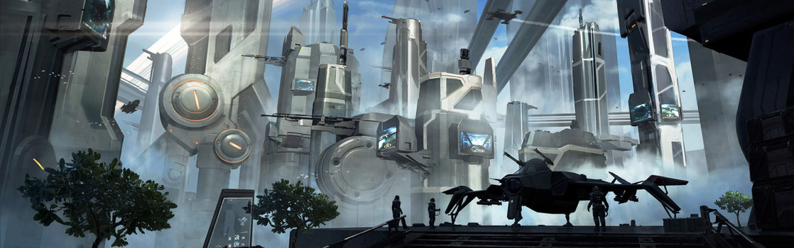

SYSTEM: VEGA

Excurs - System: Vega
Auf den ersten Blick ist das Vega-System ein unscheinbares System mit vier Planeten, die einen Hauptreihenstern vom Typ-G umkreisen. Zu Beginn als Kernstück der rapiden menschlichen Expansion angesehen, welcher eines Tages mit Planeten wie der Erde und Terra konkurrieren könne, fand sich Vega an der Frontlinie des Vanduul-Konflikts wieder und leidet bis heute daran. Das System wurde 2402 zum ersten Mal besiedelt. Die zwei Planeten Aremis und Selene in der grünen Zone wurden rasch dem Terraforming unterzogen. Die Bevölkerung des Systems expandierte, errichtete Städte, schürfte im Asteroidengürtel und erlangte ihren ersten UEE-Repräsentanten und das alles in kurzer Abfolge. Dieses Wachstum endete mit dem Fall von Armitage gegen Ende des 27. Jahrhunderts. Vega fand sich an der Frontlinie wieder und aus Furcht vor einem organisierten, andauernden Feldzug der Vanduul verringerte sich die Bevölkerung drastisch. Da sich jene, die es konnten, zu den inneren Welten zurückzogen, fielen die Immobilienpreise ins Bodenlose und die Grundhaltung der Bevölkerung in diesem System änderte sich praktisch über Nacht. Innerhalb eines Augenblicks bestand der profitabelste Job im gesamten System darin, Wege zu finden, wie man es verlassen konnte. Die befürchtete Vanduul-Invasion hat, bis jetzt, noch nicht stattgefunden. Abgesehen von den schnell zurückgeschlagenen Aufklärungsüberfällen unternahmen die Aliens keinerlei Vorstöße, um das System zu übernehmen oder großflächig zu verwüsten. Trotzdem schwebt eine konstante Bedrohung durch eine Invasion weiterhin über der Bevölkerung. Während einheimische Veganer sich selbst an der Frontlinie der Kriegsanstrengungen sehen, schließen sich viele Militärs nicht an. Mit der existierenden Infrastruktur und der direkten Verbindung zu den Kernwelten mag bei einer Versetzung nach Vega das Gefühl eines Fronteinsatzes einfach nicht aufkommen. Innerhalb des vergangenen Jahrzehnts begann sich die Lage im System zu drehen. Menschen, welche die Effekte einer recht schwierigen Wirtschaft spürten, strömten nach Vega, um einen Vorteil aus den niedrigen Immobilienpreisen zu schlagen. Selbst angesichts der Tatsache, dass die Frühwarnsysteme ab und an das System abriegeln, wenn durch Virgil streunende Vanduul-Clans entdeckt werden, wird diese Bedrohung für einige durch die Vorteile einer billigen Miete mehr als aufgewogen.
Die letzte Welt im Vega-System, Vega IV, ist ein Standard-Gasriese, eine massive, dichte, rotbraune Welt, die niemals mit Jupiter oder Krang in Sachen Schönheit wird konkurrieren können. Was Vega IV allerdings bieten kann, ist ein vernünftiger Anlaufpunkt für jeden, der Treibstoff für ein größeres Schiff sucht. Unabhängige Raffinerien sprenkeln den Orbit des Gasriesen und die äußere Wasserstoffschicht ist sogar rein genug, um dort selbst zu sammeln.

„Ich arbeite auf einer Landezone, habe mit Leuten aus dem ganzen Universum gesprochen und je mehr ich getroffen habe, desto sicherer wurde ich, dass ich nie woanders als auf Vega leben würde. Sicher gibt es auch Menschen außerhalb des Systems, aber Vega ist für mich der einzige Ort, der ein richtiges Volk hat.“ – Terri Santos, Cargolympics Champion
Vega I
Vega I ist ein Zwergplanet, der relativ nahe am Stern des Vega-Systems liegt. Bisher wurde noch kein Versuch unternommen, ihn bewohnbar zu machen. Auch wurden noch keinerlei interessante Ressourcen auf ihm entdeckt. Eine einzige unbemannte Sonde war alles, was Astrogeologen brauchten, um den Planeten von vornherein als potenzielle Einkommensquelle auszuschließen.Vega II (Aremis)
Aremis ist von einer Reihe von Planetenringen umgeben, welche ebenfalls einige kleine Schäfermonde beinhalten. Das ist für eine bewohnte Welt schon wahrhaft erstaunlich. Die Biosphäre des Planeten, die im Zuge des Terraforming-Prozesses für Menschen angenehm gemacht wurde, entwickelte sich auf natürliche Weise und erzeugte eine große Palette an Flora und Fauna, welche auch heute noch existiert. Aremis war der zweite Planet, der im Vega-System besiedelt wurde. Die meiste Zeit seines „Lebens“ war Vega II der Standort für eine Reihe von Navy- und anderen Stützpunkten sowie ein beliebter Anlaufpunkt für Strandurlaube. Auf dem Planeten wurden Basen aller vier Waffengattungen errichtet, darunter auch eine der ältesten Einrichtungen der Army, „Camp [General Chester C.] Manheim“. Diese Entwicklung änderte sich im Laufe der letzten Jahre. Aremis profitierte am meisten von der kürzlichen Bevölkerungsexplosion, die zur Entstehung mehrerer erwähnenswerter kleiner Städte sowie der Bewirtschaftung eines großen Teils des fruchtbaren Landes führte. Dieser Bevölkerungszustrom hat das System nach der Ernennung Aremis‘ zum „Planet to watch“ durch die New United gestärkt. Die Stadt New Corvo ist zurzeit die größte Stadt des Planeten und der Ort, an dem sämtlicher nicht-planetarer Handel stattfindet. Außerdem entwickelt es sich zum Zentrum für kulinarische Wissenschaften im UEE. Viele Ökonomen sind der Meinung, dass Aremis seinen Schwesterplaneten Selene in ein paar Jahren überholen und sogar dessen Relevanz übertreffen wird. Der örtliche Rat des Gouverneurs begann nachdrücklich auf einem Antrag auf Anerkennung durch den Senat zu beharren. Es wurden sogar Schritte unternommen, Freelancer und Söldner anzuwerben, welche die lokalen Polizeieinheiten und Milizen unterstützen sollten, um so die Kriminalität zu senken.Vega III (Selene)
Selene ist das Herz des Vega-Systems, obwohl viele glauben, dass es diesen Titel nicht mehr allzu lange behalten wird. Wenngleich die Bevölkerung wesentlich geringer ist als in der Blütezeit des Systems, beherbergt Selene doch eine Einwohnerzahl, die durchaus Größenordnungen über der anderer Grenzwelten liegt. Selene wird im UEE-Senat angemessen repräsentiert – mit einem Sitz, der als recht einflussreich gilt. Die größte Stadt und Hauptlandezone ist Titus, eine wild wuchernde Megastadt, die von vergangener Größe zu träumen scheint. Während das Stadtzentrum ziemlich weit entwickelt ist, liegen rund um das Zentrum verrostete Bauprojekte, die über Jahrhunderte nie fertiggestellt worden sind. In letzter Zeit wurden viele dieser Projekte von externen Interessenten gekauft, die hoffen, die Region zu sanieren. Der Erfolg oder Misserfolg dieser Initiative muss sich noch zeigen. Ein spezieller Teil der Bevölkerung ist besonders interessant: die Nachkommen der Überlebenden aus dem Orion-System. Als blutdürstiger Haufen ohne Namen schließen sich die Nachkommen der Überlebenden, die einst auf Orion geflohen waren, oftmals zusammen, um grauenhafte Vergeltungsschläge im Vanduul-Raum zu unternehmen. Diese Missionen zahlen sich selten aus und sind extrem gefährlich, gelten jedoch als Auszeichnungen für wahre Söldner-Kampfpiloten.Asteroidengürtel und Vega IV
Jenseits von Selene liegt der dichte Asteroidengürtel des Systems. Auch wenn er offiziell dem UEE gehört, finden in dem bereits stark abgebauten Gürtel keine Patrouillen statt. Unabhängige Vertragspartner ohne eigene Schürfrechte sind hier oft zu sehen und auch wenn dem Asteroidengürtel wertvolle Mineralien fehlen, wird er oft als eine Art Trainingsgebiet für angehende Schürfer gesehen.Die letzte Welt im Vega-System, Vega IV, ist ein Standard-Gasriese, eine massive, dichte, rotbraune Welt, die niemals mit Jupiter oder Krang in Sachen Schönheit wird konkurrieren können. Was Vega IV allerdings bieten kann, ist ein vernünftiger Anlaufpunkt für jeden, der Treibstoff für ein größeres Schiff sucht. Unabhängige Raffinerien sprenkeln den Orbit des Gasriesen und die äußere Wasserstoffschicht ist sogar rein genug, um dort selbst zu sammeln.
Reisewarnung
Lassen Sie sich nicht durch die Haltung der Einwohner täuschen – Vega steht an der Frontlinie. Vanduul sind in diesem System unterwegs und über Vega hinaus zu reisen bringt Bürger in akute Gefahr, auf Plünderer zu stoßen.Ein Flüstern im Wind
„Obwohl ich drei Tage in der Brigg verbrachte, ich Schulden von zwei Wochen Gehalt hatte und ich mich nur noch an die Hälfte erinnere, werde ich jedem, der fragt, schwören, dass das Beste daran, in der Navy zu sein, das freie Wochenende auf Aremis ist.“ – Leutnant Donald Hywanti, Artillerie-Offizier im Ruhestand„Ich arbeite auf einer Landezone, habe mit Leuten aus dem ganzen Universum gesprochen und je mehr ich getroffen habe, desto sicherer wurde ich, dass ich nie woanders als auf Vega leben würde. Sicher gibt es auch Menschen außerhalb des Systems, aber Vega ist für mich der einzige Ort, der ein richtiges Volk hat.“ – Terri Santos, Cargolympics Champion